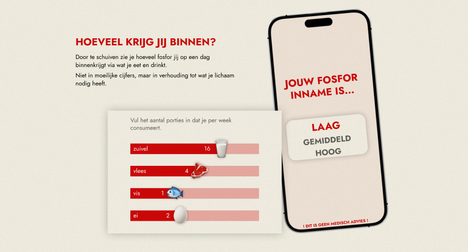
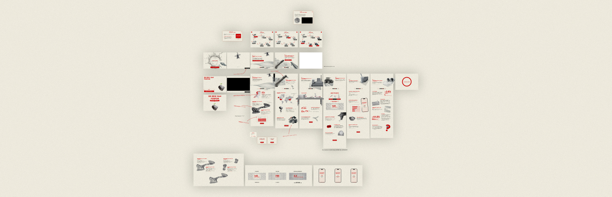
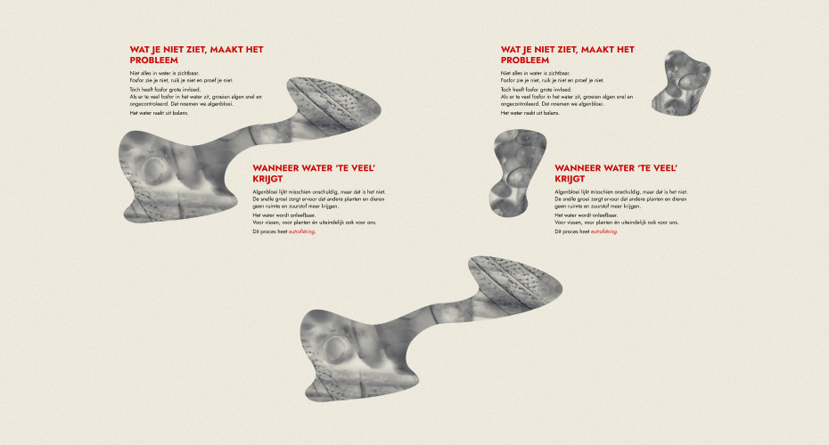
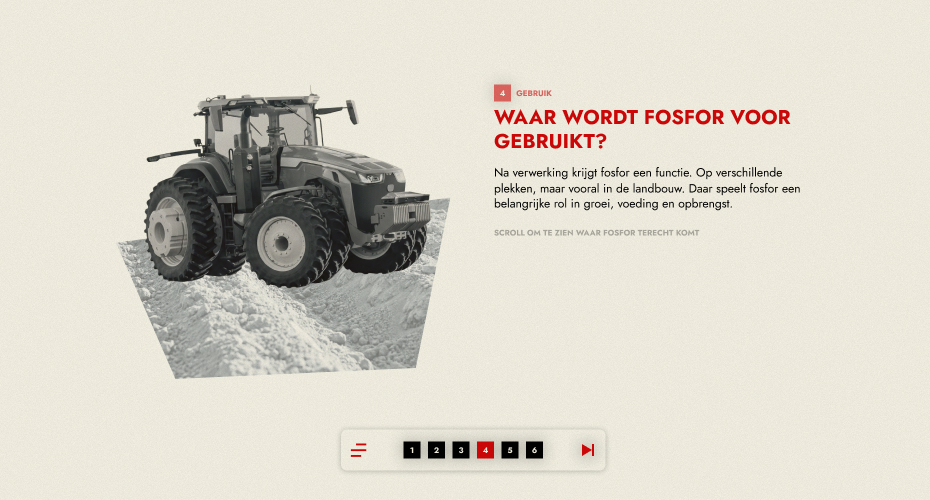
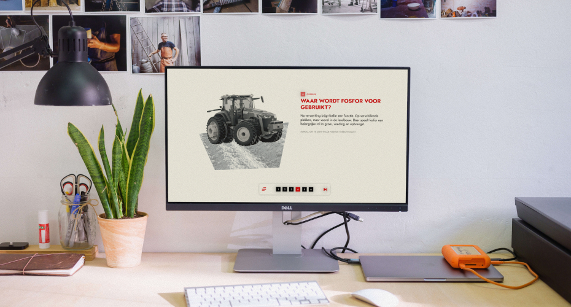

THE STORY
For Statistics Netherlands, I developed an interactive digital narrative about the journey of phosphorus: from mining and processing to its use in agriculture, human consumption, and ultimately the pollution of our surface water. Instead of dry statistics, I opted for a linear web story with separate chapters, so that users can experience the phosphorus cycle as a visual journey while scrolling and clicking, in which text, images, and micro-animations reinforce each other and make a complex sustainability issue accessible.

HOW I SHAPED THIS
This project shows how I use storytelling to make complex topics feel human and understandable. Instead of treating this as a data visualisation, I approached it as a guided journey: what should someone feel and realise at each step of the phosphorus cycle? I broke the story into clear chapters and used scrolling, pacing and small interactions to slowly build that awareness. Visually, I kept the interface calm so that movement and transitions do the work, rather than shouting for attention. It is a good example of how I like to translate abstract research into a narrative that users can simply follow, without losing the depth behind it.

CHALLENGES
The key challenge was to make complex, data-driven content understandable without oversimplifying it. By distilling each stage of the phosphorus cycle into a single clear message, accompanied by appropriate visuals and micro-interactions, I created a consistent experience that feels both informative and intuitive.



- workflow in team
- type project school project
- year 2026
- client CBS